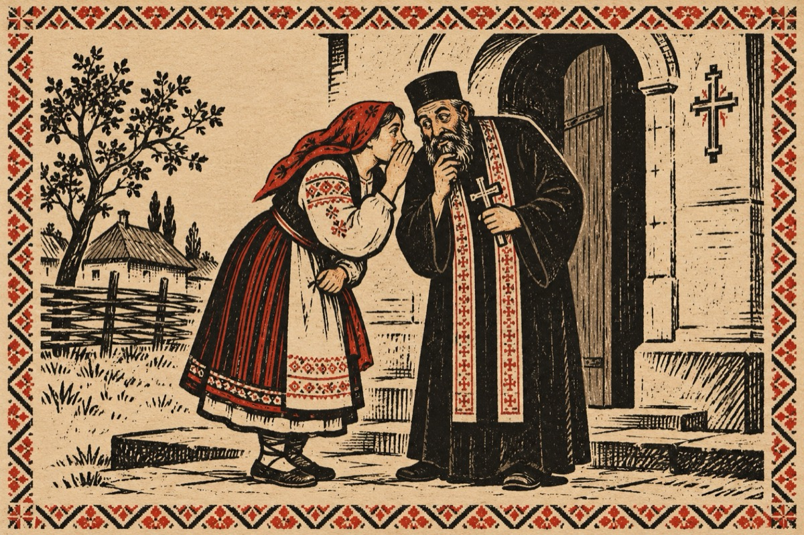

Mărie o mărs la popă
Văsălie s-apucat
Știu eu ce i-o fi venit
De s-a dus la una-n sat
Cu un nume renumit.
Pomenit de mulți feciori
Și cu fapta și cu vorba
Cei ținea în sărbători,
Până și pe taica Popa.
Mărie nu s-o lăsat
Și a mărs la spovedit
Iar Popa când a aflat
Cu ea o păcătuit!
Iertăciunea de păcate
Numai el o-are-n har
Cică cui pe cui să scoate
Dar să nu fie-n altar!
Mărie și Văsălie
Își spun vorbele în șoapte
Ș-o țân într-o veselie
Cu iertare de păcate!
Vasile Groza